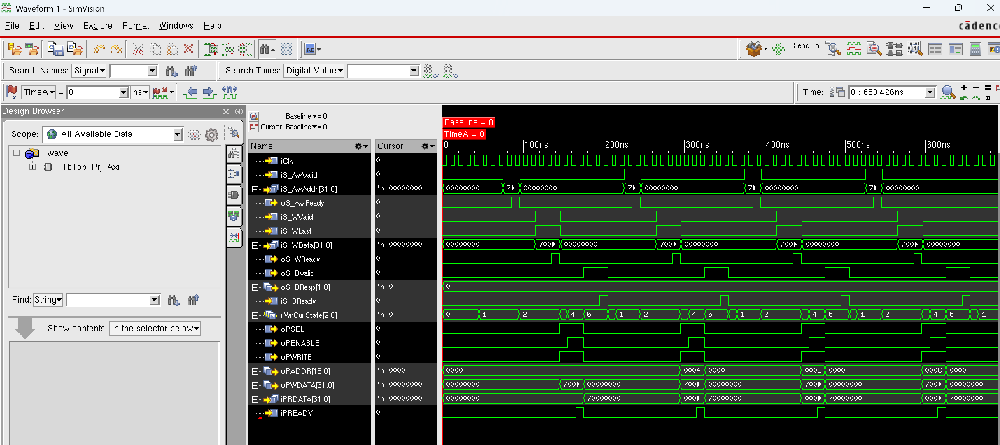
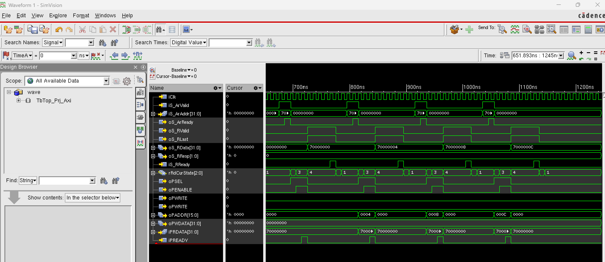

4. AXI-to-APB Bridge 설계와 검증
최종 프로젝트에서 한 일은 AXI와 APB를 각각 따로 아는 데서 끝내지 않고, AXI 요청을 APB register access로 바꾸는 중간 회로를 직접 만든 것이다. AXI 쪽에서는 AW/W/B, AR/R 채널 handshake가 들어오고, APB 쪽에서는 PSEL/PENABLE 기반 transfer가 나가야 한다. 이 차이를 Verilog FSM으로 연결하고, 4개 register를 가진 APB slave와 testbench로 write/read 동작을 검증했다.
4.1 왜 AXI-to-APB Bridge를 구현했는가
SoC 안에서는 고성능 master와 단순 주변장치가 같은 protocol을 쓰지 않는 경우가 많다. CPU나 DMA 같은 master는 AXI interconnect를 통해 접근하고, peripheral register는 APB처럼 단순한 control bus에 붙는다. AXI-to-APB bridge는 이 사이에서 AXI transaction을 받아 APB transfer로 바꿔 주는 번역기 역할을 한다.
이 프로젝트의 제한 조건은 비교적 명확했다. 32-bit data, single burst, OKAY response를 기준으로 하고, APB slave는 0x0000, 0x0004, 0x0008, 0x000C에 대응하는 4개의 32-bit register를 가진다. 제한된 조건이지만, AXI handshake를 닫고 APB setup/enable을 만들고 다시 AXI response를 반환하는 end-to-end loop가 들어 있다.

4.2 FSM으로 protocol 변환 순서를 설계
write FSM은 AXI write address를 받는 상태, write data를 받는 상태, APB setup과 enable을 만드는 상태, 마지막으로 AXI B response를 반환하는 상태로 나눴다. 실제 상태 이름은 xW_Idle, xW_AwReady, xW_WValid, xW_Setup, xW_Enable, xW_BValid로 두었다. APB transfer가 끝나려면 iPREADY가 올라와야 하므로, xW_Enable에서 iPREADY를 보고 B response 단계로 넘어가게 했다.
read FSM은 xR_Idle, xR_ArReady, xR_Setup, xR_Enable, xR_RValid 순서로 구성했다. AR handshake로 read 주소를 받은 뒤 APB read setup/enable을 만들고, APB slave에서 나온 iPRDATA를 AXI R channel의 oS_RData로 반환한다. write와 read를 한 FSM에 섞지 않은 이유는 AXI에서 write path와 read path가 독립 채널로 움직이기 때문이다.
AXI write 주소와 data handshake를 각각 확인한다.
PSEL, PENABLE, PWRITE, PADDR, PWDATA를 만들어 register에 쓴다.
AXI read 주소를 받고 APB read transfer를 시작한다.
APB PRDATA를 AXI RDATA로 돌려주고 RVALID/RLAST를 닫는다.
4.3 최종 프로젝트에서 만든 블록
최종 결과물은 bridge, APB slave, top, testbench 네 부분으로 나눌 수 있다. Axi2Apb 모듈은 AXI slave처럼 보이는 입력을 받아 APB master 신호를 만든다. ApbSlave 모듈은 rA, rB, rC, rD 네 register를 가지고, PSEL/PENABLE/PWRITE/PREADY 조건에서 write를 commit하며, read에서는 주소에 따라 PRDATA를 mux로 반환한다. Top 모듈은 둘을 내부 APB wire로 연결했다.
testbench는 단순히 한 번 파형을 보기 위한 코드가 아니라 AXI master 역할을 하도록 만들었다. write task와 read task를 두고,
AWVALID, WVALID, ARVALID을 일정 cycle 유지한 뒤 READY와 만나는지 확인했다. 이후 4개 register에 값을 쓰고 다시 읽어 기대값과 비교했다.
최종 로그에서는 PASS: 4REG write/read + timing OK가 출력되었다.
protocol conversion
AXI AW/W/B, AR/R handshake를 APB setup-enable transfer로 바꿨다.
4-register target
0x0000~0x000C 주소의 네 register에 대해 write commit과 read mux를 구현했다.
AXI master model
task 기반 write/read 시나리오로 timeout, response, readback을 함께 확인했다.
4.4 Waveform과 log로 확인한 최종 동작
검증할 때는 “파형이 그럴듯해 보인다”에서 멈추지 않았다. write에서는 AWREADY와 WREADY가 VALID와 만난 뒤 APB write transfer가 생성되는지, APB slave가 PREADY를 올린 뒤 BVALID/BRESP가 반환되는지 봤다. read에서는 AR handshake 이후 APB read가 일어나고, 읽은 PRDATA가 RDATA로 돌아오는지 확인했다.


4.5 이 실습이 이후 시스템 설계와 연결되는 지점
이 실습에서 남은 것은 AXI와 APB의 정의를 외운 것이 아니라, protocol을 RTL 상태기계와 검증 루틴으로 닫아 본 경험이다. 센서나 FPGA가 들어간 비전 시스템에서도 host가 register를 설정하고, hardware block이 상태를 반환하며, data path가 정상적으로 열리는지 확인해야 한다. AXI-to-APB bridge를 만들면서 배운 주소 decode, handshake, ready/response, testbench 기반 readback 검증은 이후 이벤트센서 시스템이나 FPGA 기반 비전 가속기를 볼 때 하드웨어와 소프트웨어 사이의 접점을 읽는 기준이 되었다.